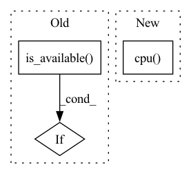

Pattern ID :7698
Before Change
for idx, data in enumerate(tqdm(valid_loader, desc="validation")):
// get the inputs and wrap in Variable
if torch.cuda.is_available() :
inputs = data["sat_img"].cuda()
labels = data["map_img"].cuda()
else:After Change
valid_acc.update(metrics.dice_coeff(outputs, labels), outputs.size(0))
valid_loss.update(loss.data.item(), outputs.size(0))
if idx == 0:
logger.log_images(inputs.cpu(), labels.cpu(), outputs.cpu() , step)
logger.log_validation(valid_loss.avg, valid_acc.avg, step)
print("Validation Loss: {:.4f} Acc: {:.4f}".format(valid_loss.avg, valid_acc.avg))In pattern: SUPERPATTERN
Frequency: 3
Non-data size: 3
Instances Fragment ID: 25583575
Project Name: rishikksh20/resunet
Commit Name: 470e8a1b090281f7f4c6910908cf8679865064bc
Time: 2020-08-22
Author: rishikksh20@gmail.com
File Name: train.py
M Class Name: AnonimousClass
N Class Name: AnonimousClass
M Method Name: validation(5)
N Method Name: validation(5)
M Parent Class:
N Parent Class:
M File Name: train.py
N File Name: train.py
M Start Line: 164
M End Line: 207
N Start Line: 165
N End Line: 184
Before Change
save_filename = "%d_net_%s" % (epoch, network_label)
save_path = os.path.join(self.save_dir, save_filename)
network.save(save_path)
if gpu_ids and torch.cuda.is_available() :
network.cuda(gpu_ids[0])
// helper loading function that can be used by subclassesAfter Change
network = network.module
state_dict = network.state_dict()
for key, param in state_dict.items():
state_dict[key] = param.cpu()
torch.save(state_dict, save_path)
def load_network(self, load_path, network, strict=True):
if isinstance(network, nn.DataParallel): Fragment ID: 25583570
Project Name: janspiry/distributed-pytorch-template
Commit Name: 37e0ca8cb78b4f18bf00a8881a479a0c9e582a8c
Time: 2022-01-29
Author: lw_jiang@foxmail.com
File Name: models/base_model.py
M Class Name: BaseModel
N Class Name: BaseModel
M Method Name: save_network(4)
N Method Name: save_network(5)
M Parent Class:
N Parent Class:
M File Name: models/base_model.py
N File Name: models/base_model.py
M Start Line: 42
M End Line: 50
N Start Line: 61
N End Line: 68
Before Change
plt.imshow(y[0, 4].detach())
plt.savefig(os.path.join(heatmap_folder, "gt_map_%i" % i + ".png"))
plt.clf()
if torch.cuda.is_available() :
heatmap_pred = heatmap_pred.cuda()
y = y.cuda()
pred_keypoints, y_keypoints = model.computeSubPixMax(heatmap_pred, y, threshold)After Change
x, y = batch
heatmap_pred = model.forward(x)
if save_heatmaps:
plt.imshow(heatmap_pred[0, 4].detach().cpu() .numpy())
plt.savefig(os.path.join(heatmap_folder, "pred_map_%i" % i + ".png"))
plt.clf()
plt.imshow(y[0, 4].detach().cpu().numpy()) Fragment ID: 25583571
Project Name: danbider/lightning-pose
Commit Name: 03581e70bd43917f91201508e3eba2b3892080af
Time: 2021-08-03
Author:
File Name: pose_est_nets/utils/plotting_utils.py
M Class Name: AnonimousClass
N Class Name: AnonimousClass
M Method Name: plotPredictions(5)
N Method Name: plotPredictions(5)
M Parent Class:
N Parent Class:
M File Name: pose_est_nets/utils/plotting_utils.py
N File Name: pose_est_nets/utils/plotting_utils.py
M Start Line: 68
M End Line: 79
N Start Line: 84
N End Line: 96